1:34:56 · 20 OPERE
George Orwell
Il filo del discorso
Un ampio percorso attraverso George Orwell, proposto come scrittore della responsabilità individuale e dell’attenzione ai fatti, oltre la notorietà di 1984 e La fattoria degli animali. Dopo una panoramica dei testi da accostargli, il relatore segue l’esperienza scolastica, il servizio nella polizia coloniale e la scelta di avvicinarsi alla povertà. I saggi autobiografici diventano il luogo in cui la vocazione alla scrittura incontra il problema della coscienza e della decenza. I romanzi ambientati in Birmania, la storia di Dorothy e Fiorirà l’aspidistra permettono di discutere imperialismo, educazione e potere del denaro. L’esperienza spagnola e La strada di Wigan Pier aprono il confronto con il socialismo e con il divario fra ideali e comportamenti. Nel corso della lettura, numerose digressioni sulla società contemporanea tornano alla possibilità di manipolare il linguaggio, la memoria e il giudizio. La conclusione si sofferma sul saggio dedicato al rospo comune: l’amore per la natura e i piaceri elementari della vita diventa una risorsa per immaginare un futuro umano.
I libri nel discorso
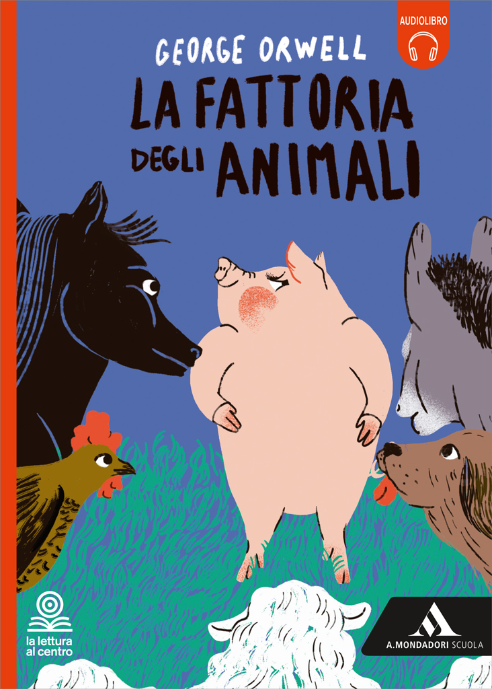
La fattoria degli animali
Copertina: A. Mondadori Scuola · edizione scolastica
Presentata fra le due opere più note di Orwell; ritorna a 5014 secondi nel commento alla rivoluzione degli animali e alla figura di Clover.
Passaggio 0:29 ↗ · Fonti e libro ↗
1984
Copertina: Newton Compton · edizione illustrativa
Titolo nominato dopo La fattoria degli animali; il condizionamento di Winston, la neolingua e il controllo del passato ricorrono più avanti.
Passaggio 0:31 ↗ · Fonti e libro ↗Utopia
Copertina: Demetra, 2010 · edizione di riferimento
Il relatore indica l’Utopia di Moro nella panoramica iniziale dei testi da accostare a Orwell.
Passaggio 3:25 ↗ · Fonti e libro ↗
Il tramonto dell’Occidente
Copertina: Nino Aragno, 2019 · volume II, seconda parte · edizione di riferimento
Il tramonto dell’Occidente e Spengler sono nominati come ulteriore testo di confronto.
Passaggio 3:39 ↗ · Fonti e libro ↗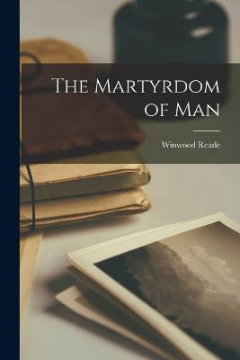
The Martyrdom of Man
Identificazione probabile
Copertina: Creative Media Partners, 2022 · edizione inglese di riferimento
Fra gli autori che hanno influenzato Orwell, le captions deformano il nome e il titolo inglese in corrispondenza di 281–287 secondi; segue il richiamo al rapporto con Darwin.
Passaggio 4:41 ↗ · Fonti e libro ↗The Private Papers of Henry Ryecroft
Identificazione probabile
Copertina: Mint Editions, 2021 · edizione inglese di riferimento
George Gissing è nominato; il titolo inglese è fortemente deformato nelle captions a 338–344 secondi. Segue la descrizione del ritiro in campagna di un amante dei libri.
Passaggio 5:38 ↗ · Fonti e libro ↗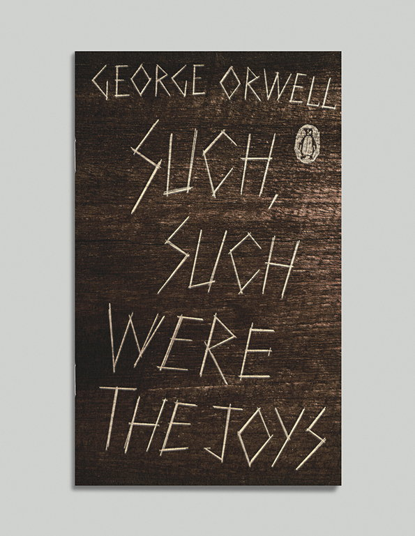
Such, Such Were the Joys
Identificazione probabile
Copertina: Penguin Books, Great Orwell, 2014; copertina di David Pearson
Copertina dell’edizione autonoma Penguin di Such, Such Were the Joys, disegnata da David Pearson. Fotografia della copertina pubblicata nel servizio dedicato al designer. Edizione scelta come riferimento iconografico; nessuna edizione è confermata nel video. L’identificazione dell’opera nel video resta probabile.
Il titolo inglese è deformato dalle captions; il racconto di St Cyprian’s, delle punizioni scolastiche e del senso di colpa occupa il seguito fino a 1375 secondi.
Passaggio 18:59 ↗ · Fonti e libro ↗Senza un soldo a Parigi e a Londra
Copertina: Newton Compton · edizione di riferimento
Titolo inglese Down and Out in Paris and London e sua resa italiana sono richiamati dopo la descrizione della vita di Orwell a Parigi.
Passaggio 25:54 ↗ · Fonti e libro ↗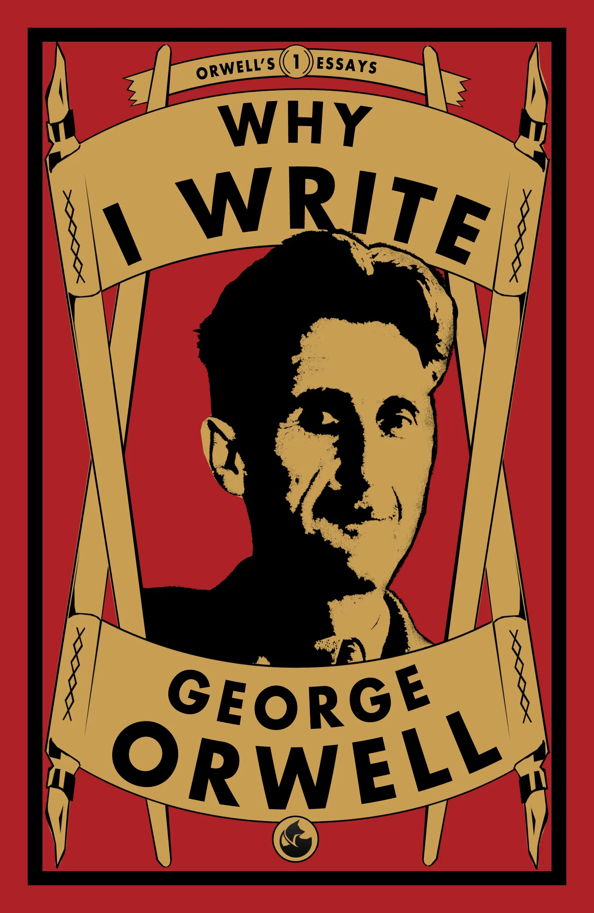
Why I Write
Copertina: Renard Press, Orwell’s Essays n. 1, 2021
Edizione autonoma del saggio nella serie Orwell’s Essays, n. 1, pubblicata il 1 gennaio 2021. Nessuna edizione attribuita al video.
Il saggio è introdotto come Why I Write, Perché scrivo; segue la lettura sulla vocazione alla scrittura fin dall’infanzia.
Passaggio 27:09 ↗ · Fonti e libro ↗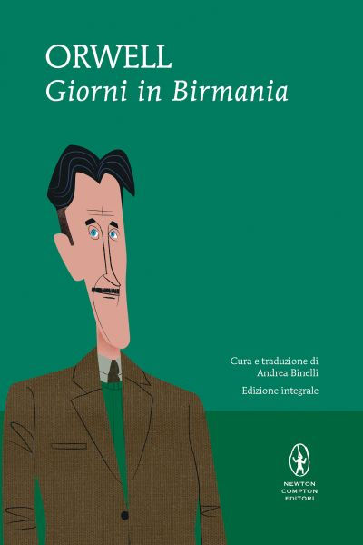
Giorni in Birmania
Copertina: Newton Compton · edizione di riferimento
Il libro sull’esperienza birmana è richiamato con il titolo inglese deformato e con Giorni burmesi, seguito dal commento al personaggio Flory.
Passaggio 33:50 ↗ · Fonti e libro ↗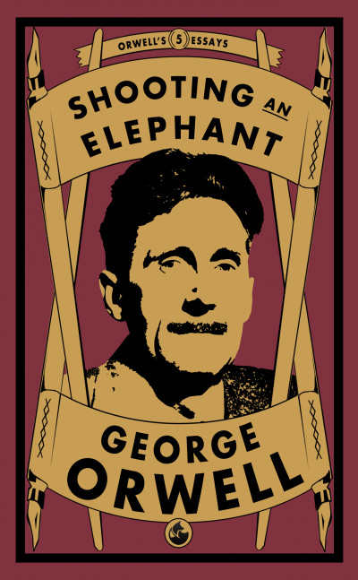
Shooting an Elephant
Copertina: Renard Press, 2022
Edizione autonoma del saggio nella serie Orwell’s Essays, n. 5. Non è l’edizione identificata nel video.
Il titolo inglese è nominato nel gruppo dei saggi legati all’esperienza birmana, con deformazioni automatiche.
Passaggio 34:01 ↗ · Fonti e libro ↗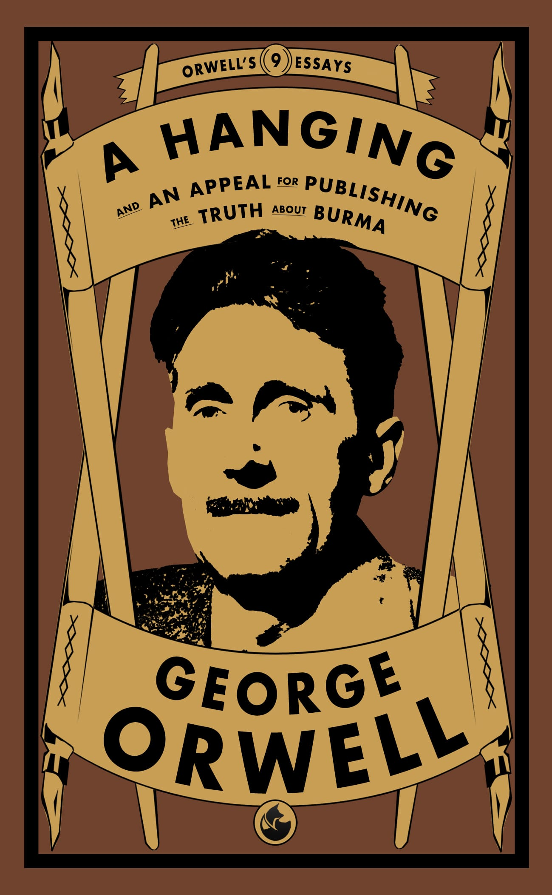
A Hanging
Identificazione probabile
Copertina: Renard Press, Orwell’s Essays 9, 2023
Copertina del volumetto A Hanging, che include anche An Appeal for Publishing the Truth about Burma. Edizione scelta come riferimento iconografico; nessuna edizione è confermata nel video. L’identificazione dell’opera nel video resta probabile.
La conversazione passa all’esecuzione di un condannato e, a 2143–2181 secondi, al gesto con cui evita una pozzanghera mentre va al patibolo; il titolo inglese non è pronunciato in forma riconoscibile.
Passaggio 34:15 ↗ · Fonti e libro ↗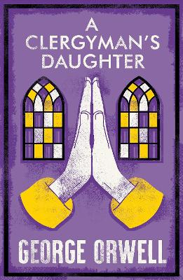
La figlia del reverendo
Copertina: Alma Classics, 2023 · A Clergyman’s Daughter · edizione inglese di riferimento
A Clergyman’s Daughter è introdotto attraverso il titolo inglese deformato e diverse rese italiane; seguono Dorothy, l’amnesia e la scuola privata.
Passaggio 41:38 ↗ · Fonti e libro ↗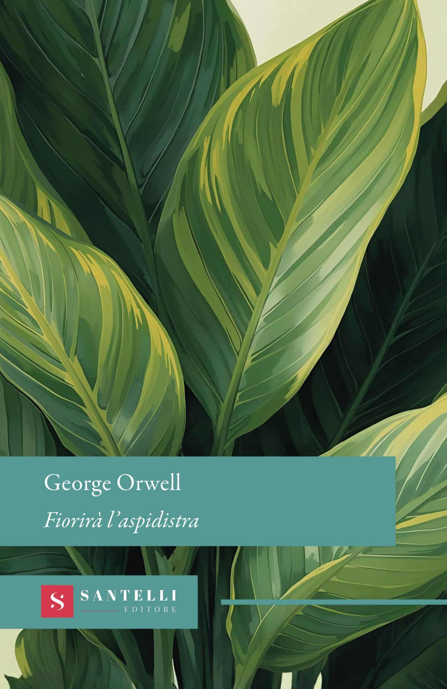
Fiorirà l’aspidistra
Copertina: Santelli · Classici · copertina ufficiale dell’edizione di riferimento
Dopo il titolo inglese, il titolo italiano è esplicito a 2781 secondi. Gordon Comstock, il denaro e l’aspidistra sono discussi a lungo da 3856 secondi.
Passaggio 46:21 ↗ · Fonti e libro ↗
In Front of Your Nose
Copertina: David R. Godine, Nonpareil · Collected Essays, Journalism and Letters, vol. 4
Copertina della raccolta In Front of Your Nose, 1945–1950, quarto volume dei Collected Essays, Journalism and Letters, curato da Sonia Orwell e Ian Angus. Il saggio omonimo è incluso a pagina 122: l’immagine rappresenta la raccolta, non una pubblicazione autonoma del saggio. Nessuna edizione attribuita al video.
Dopo la discussione sul criterio di autorità, il saggio è chiamato Di fronte al naso; segue il titolo inglese e la riflessione sulla difficoltà di vedere i fatti.
Passaggio 57:25 ↗ · Fonti e libro ↗
La favola delle api
Copertina: Laterza · Economica Laterza · edizione di riferimento
Dal richiamo a vizi privati e pubbliche virtù, il relatore nomina La favola delle api a 4092 secondi come riferimento del confronto su Orwell.
Passaggio 1:08:12 ↗ · Fonti e libro ↗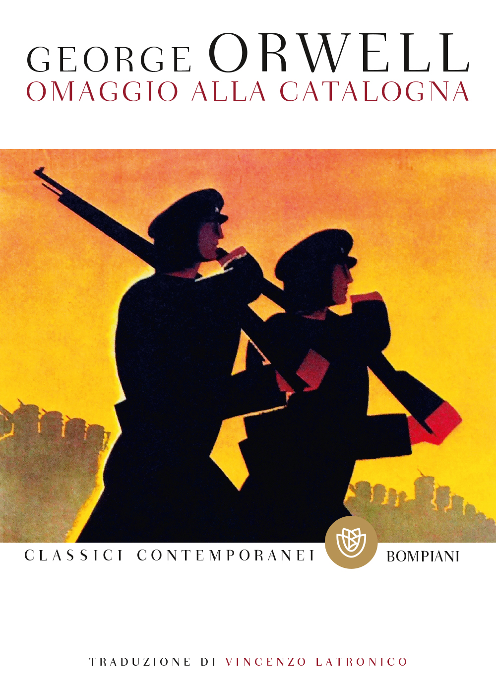
Omaggio alla Catalogna
Copertina: Bompiani, 2022 · edizione di riferimento
Omaggio alla Catalogna è nominato prima del commento all’esperienza di Orwell nella guerra di Spagna.
Passaggio 1:09:27 ↗ · Fonti e libro ↗
Looking Back on the Spanish War
Identificazione probabile
Copertina: Página Indómita, 2025
Copertina della raccolta che contiene Looking Back on the Spanish War in traduzione spagnola, come documentato dai titoli originali nel campione dell'editore. Edizione illustrativa, non identificata nel video.
È indicato un saggio di riflessioni sulla guerra di Spagna; seguono le domande sulle scelte delle potenze europee e sul ruolo britannico.
Passaggio 1:10:33 ↗ · Fonti e libro ↗La strada di Wigan Pier
Copertina: Alma Classics, 2024 · The Road to Wigan Pier · edizione inglese di riferimento
The Road to Wigan Pier e la resa italiana La strada verso Wigan Pier sono nominati introducendo l’indagine nell’Inghilterra industriale.
Passaggio 1:14:00 ↗ · Fonti e libro ↗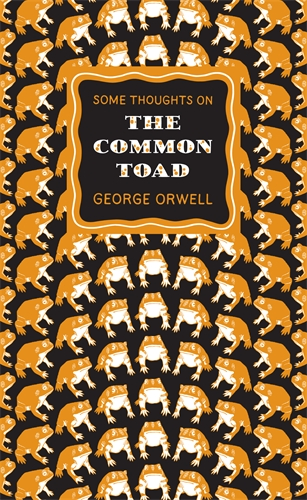
Some Thoughts on the Common Toad
Copertina: Penguin Classics, Penguin Great Ideas, 2010
Copertina della raccolta omonima di otto saggi, contenente Some Thoughts on the Common Toad. Edizione scelta come riferimento iconografico; nessuna edizione è confermata nel video.
Titolo inglese deformato, immediatamente seguito dalla resa Alcuni pensieri sul rospo comune; lunga lettura sul piacere della primavera e sul rapporto con la natura.
Passaggio 1:25:39 ↗ · Fonti e libro ↗